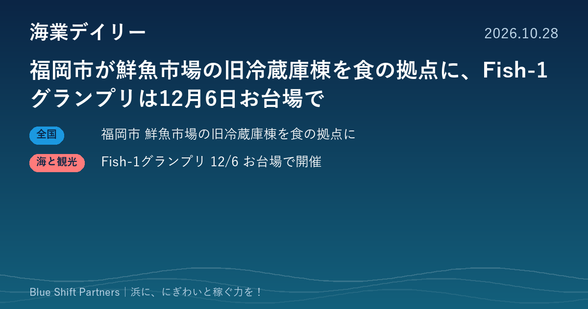

2026.10.28
福岡市が鮮魚市場の旧冷蔵庫棟を食の拠点に、Fish-1グランプリは12月6日お台場で

福岡市は、長浜の鮮魚市場にある旧東冷蔵庫棟と周辺の敷地を、魚を中心とした食の拠点として活用する事業者の公募を進めており、提案書の締切は11月25日です。国産水産物の料理コンテスト「Fish-1グランプリ」は、12月6日に東京・お台場で開かれます。
福岡市、鮮魚市場の旧東冷蔵庫棟と周辺敷地を食の拠点として活用する事業者を公募中
福岡市は、中央卸売市場鮮魚市場（長浜）でこれまで使っていた旧東冷蔵庫棟とその周辺敷地を一括で貸し付け、施設の整備と運営を担う事業者を公募しています。魚を中心に福岡・九州の食の魅力を発信し、長浜地区に新たなにぎわいを生み出すことをねらいとしています。参加表明と資格審査の申請は10月15日で締め切られ、提案書の締切は11月25日です。10月1日には、公募要綱に関する2回目の質問回答が公表されました。
ここがポイント：市場に直結する立地を生かして、魚の流通の場を食べて楽しむ場へと広げる試みです。漁港や市場の遊休施設を民間の力で食や観光の拠点に変える進め方として、各地の海業の参考になります。
出典：福岡市 公式サイト（中央卸売市場鮮魚市場 旧東冷蔵庫棟等の活用に係る事業者公募のページ）（2026-10-01）
国産水産物の料理コンテスト「第12回Fish-1グランプリ」、12月6日にお台場で開催
国産水産物を使った料理コンテスト「第12回Fish-1グランプリ」が、12月6日（日）10時から17時まで（予定）、東京都江東区のお台場青海地区P区画特設会場で開かれます。「SAKANA＆JAPAN FESTIVAL（魚ジャパンフェス）2026 in お台場」との同時開催です。主催は国産水産物流通促進センター構成員と全国漁業協同組合連合会で、出場団体の募集はすでに締め切られています。10月22日には、「さかなの日」賛同メンバーに限ったイベントブースの出展者募集も告知されました。
ここがポイント：漁協や自治体が地元の魚の料理で競い合い、首都圏の来場者に産地の魅力を直接伝えられる場です。出場しない浜にとっても、魚料理で人を呼ぶ工夫を見比べる機会になります。
出典：Fish-1グランプリ公式サイト（国産水産物流通促進センター／JF全漁連）（2026-10-22）
市場の遊休施設を食の拠点に変える動きも、料理コンテストで産地を売り込む動きも、魚を「食べる体験」に変えて人を呼ぶ点で共通しています。浜の魚をどこで、誰に、どんな形で味わってもらうかを考えることが、にぎわいと稼ぐ力の出発点になります。